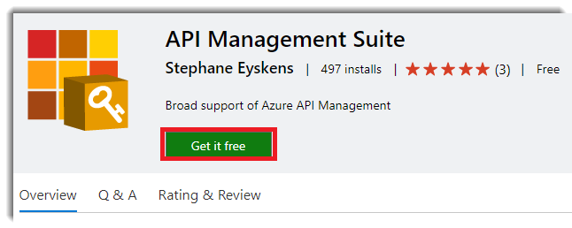

A while ago, one of our customers, a spanish insurance company, contact us with one ambitous project: Expose many of their internal APIs to their ISV ecosystem using Azure API Management. So, we accepted the challengue and we began to work together to achieve the objective.
Actually, we have three environments in Azure API Management, Dev & Pre (Developer tier) and Pro (Premium tier). We choosen Developer and Premium tiers because we need Virtual Network support (One of the most annoing thing about pricing details in apim is why Basic and Standard doesn’t have support for Virtual Network). Our customer have more than 90 apis ready to expose through Azure API Management and you will thinking about how we are going to publish this APIs, because 3 environments * 90 APIs = 180 APIs to deploy in apim. So if we have deploy manually this APIs we could have several problems like time-consuming and error prone. So we need to automate this process.
All source code of theses APIs is managed by Azure DevOps through several team projects. So our first thought was to create a set of powershell scripts to automate this process, because if you know or not Azure API Management like other services in Azure provides a REST API for performing operations on selected entities, such us apis, products, users, groups… but this approach has severral cons:
- We don’t have an user interface, is a powershell script with many input parameters and things like choose in which azure subscription we want to deploy, which resource group, the name op the service… we want to specify through variables.
- We can publish these scripts as a build artifacts but we can’t share between team projects so we have to store in some place accesible from Azure DevOps.
- We can version the scripts but we don’t have feedback about which things have been changed (Rename parameters, remove, update)
So for these reasons we decided to create an Azure DevOps custom tasks for this purpose. But after that we decided to search in the Azure DevOps marketplace if there were some extension available and we found this API Management Suite. A full suite of tasks to manage Azure Api Management from Azure DevOps developed by Stephane Eyskens. We have several tasks available:
- Create or update product.
- Create or Update Api from OpenApi specificacion.
- Create or Update Api from WSDL.
- Create or Update versioned API.
- Create or Update (versioned) API on Azure Functions
- API security checker.
This extension is open source released in Github and I have been contributing with all requirements that our customer had. We look forward to your PR!
Publish your first API using Azure DevOps
I’m going to show you how to create a new product (If you want to know more about products in Azure API Management, I recommend you the official documentation https://docs.microsoft.com/en-us/azure/api-management/api-management-key-concepts#a-nameproducts-a-products and how to publish a new API from an “OpenAPI specification” using a Release Pipeline and how to associate to the product.
1. Install the extension
- Click on this link to go to the Azure DevOps marketplace.
- Click on “Get it free” button

- Select your organization and then click on “Install” button.

- We have the suite ready to use in our Azure DevOps Pipelines. So we are going create a new Release Pipeline:
Select an Empty job:
Change the name of the stage whatever you want, in my case Development
Click on the Development stage tasks:
Add APIM DevOps tasks to the pipeline:
Out pipeline should be like this:
Click on the Create/Update product task in order the configure the required properties:
Click on the Create/Update API task in order the configure the required properties:
You can associate to the API the product created by previous task/s (You can add more than one product task and API task can be associated with all of them) and you can reduce error prone.
Once the pipeline is configured, we can can create a new Release:
And if you have followed all these steps you should be something like this:
Navigate to the Azure Portal and open your API Management resource, you should see the new API and it should be associated with the Blog product:
Also, you can configure products and API’s policies using these tasks. You can choose a starting policy template and modify as you want. The list of templates availables are:
- None(Default): Choose if you want to override your policies in API Management.
- Custom
- Basic
- JWT
- IP
- Rate and Quota
- Rate by key
- Quota by key
For example, imagine that you can restrict the product by IP. Select the IP template and fill the required information:
Conclusion
The purpose of the post is give you a brief introduction of how you can automate Azure API Management tasks from Azure DevOps using a suite of open source tasks, so from this moment you can go deeper more and of course collaborate adding more functionallity or new features.


Comments